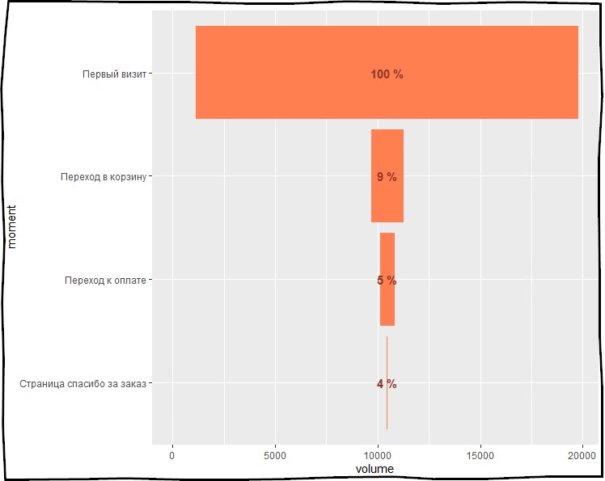
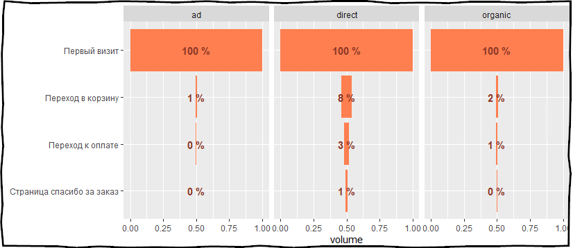

Построение поведенческих воронок на языке R, на основе данных полученных из Logs API Яндекс.Метрики
Анализ воронки продаж — типичная задача для интернет маркетинга, и в частности электронной коммерции. С её помощью вы можете:
- Выяснить на каком из шагов к покупке вы теряете потенциальных клиентов.
- Моделировать объём дополнительного притока выручки, в случае расширения каждого шага на пути к покупке.
- Оценить качество трафика закупаемого на различных рекламных платформах.
- Оценить качество обработки входящих заявок по каждому из менеджеров.
В этой статье я расскажу о том, как на языке R запрашивать данные из Logs API Яндекс Метрики, строить и визуализировать на их основе воронку.
Одно из основных преимуществ языка R заключается в наличии огромного количества пакетов, расширяющих его базовый функционал. В данной статье мы рассмотрим пакеты rym, funneljoin и ggplot2.
С помощью rym мы загрузим данные из Logs API, funneljoin используем для построения поведенческой воронки, а с помощью ggplot2 визуализируем полученный результат.

Содержание
Если вы интересуетесь анализом данных, и в частности языком R, возможно вам будут интересны мои telegram и youtube каналы. Большая часть контента которых посвящена языку R.
- Запрос данных из Logs API Яндекс Метрики
- Устновка пакета rym
- Работа с Logs API Яндекс Метрики с помощью пакета rym
- Построение воронок, пакет funneljoin
- Установка funneljoin
- Постобработка данных полученных из Logs API
- Типы воронок
- Шаги по воронке
- Визуализация воронки
- Визуализация общей воронки
- Визуализация воронки в разрезе каналов трафика
- P.S.
- Заключение
Запрос данных из Logs API Яндекс Метрики
Впервые статья была опубликована на Хабре
Кто не в курсе, что такое Logs API вот цитата из официальной справки Яндекса.
Logs API позволяет получать неагрегированные данные, собираемые Яндекс. Метрикой. Данный API предназначен для пользователей сервиса, которые хотят самостоятельно обрабатывать статистические данные и использовать их для решения уникальных аналитических задач.
Для работы с Logs API Яндекс. Метрики в R мы будем использовать пакет rym.
Полезные ссылки к пакету rym
Ссылки:
- Документация к пакету rym
- Страница пакета rym на CRAN
- Страница пакета rym на GitHub
- Вебинар по работе с пакетом rym
rym — R пакет который является интрейфейсом для взаимодействия с API Яндекс Метрики. Позволяет работать с API Управления, API Отчётов, API Совместимым с Gore API Google Analytics v3 и Logs API.
Устновка пакета rym
Для работы с любым пакетом в R его предварительно необходимо установить, и загрузить. Устанавливается пакет один раз с помощью команды install.packages(). Подключать пакет необходимо в каждой новой сессии работы в R с помощью функции library().
Для установки и подключения пакета rym воспользуйтесь следующим кодом:
install.packages("rym")
library(rym)
Работа с Logs API Яндекс Метрики с помощью пакета rym
Чтобы строить поведенческие воронки нам необходимо загрузить таблицу о всех визитах совершенных на вашем сайте, и подготовить полученные данные к дальнейшему анализу.
Авторизация в API Яндекс Метрики
Работа с API начинается с авторизации. В пакете rym процесс авторизации частично автоматизирован и запускается при вызове любой его функции.
При первом обращении к API вы будете перенаправлены в браузер для подтверждения разрешения на доступ к вашим счётчикам яндекс метрики для пакета rym. После подтверждения вы будете перенаправлены на страницу где для вас будет сгенерирован код подтверждения авторизации. Его необходимо скопировать и вставить в консоль R, в качестве ответа на запрос "Enter authorize code:".
Далее вы можете сохранить учётные данные в локальный файл, ответив y или yes на запрос "Do you want save API credential in local file ...". В таком случае при следующих обращениях к API вам не понадобится повторно проходить авторизацию через браузер, а учётные данные будут подгружаться из локального файла.
Запрос данных из API Яндекс Метрики
Первое, что мы запросим из API Яндекс Метрики это список доступных счётчиков, и настроенных целей. Делается это с помощью функций rym_get_counters() и rym_get_goals().
# подключаем пакет
library(rym)
# запрашиваем список счётчиков
counters <- rym_get_counters(login = "ваш логин")
# запрашиваем список целей
goals <- rym_get_goals("0000000", # номер нужного счётчика
login = "ваш логин")
Используя приведённый выше пример кода замените "ваш логин" на ваш логин в яндексе, под которым доступны нужные вам счётчики яндекс метрики. И "0000000" на номер нужного вам счётчика. Посмотреть номера доступных вам счётчиков можно в загруженной таблице counters.
Таблица доступных счётчиков — countersимеет следующий вид:
# A tibble: 2 x 9
id status owner_login name code_status site permission type gdpr_agreement_accepted
<int> <fct> <fct> <fct> <fct> <fct> <fct> <fct> <int>
1 11111111 Active site.ru1 Aerosus CS_NOT_FOUND site.ru edit simple 0
2 00000000 Active site.ru Aerosus RU CS_OK site.ru edit simple 1
В поле id указаны номера всех доступных счётчиков яндекс метрики.
Таблица goals выглядит следующим образом:
# A tibble: 4 x 5
id name type is_retargeting conditions
<int> <fct> <fct> <int> <fct>
1 47873638 Переход в корзину url 0 type:contain, url:site.ru/checkout/cart/
2 47873764 Переход к оплате url 0 type:contain, url:site.ru/onestepcheckout/
3 47874133 Страница спасибо за заказ url 0 type:contain, url:/checkout/onepage/success
4 50646283 Клик по кнопке телефон action 0 type:exact, url:click_phone
Т.е. в счётчике с которым я работаю настроено отслеживание следующих действий:
- Переход в корзину
- Переход к оплате
- Страница спасибо за заказ
- Клик по кнопке телефон
В дальнейшем для преобразования данных мы будем использовать пакеты входящие в библиотеку tidyverse: tidyr, dplyr. Поэтому перед тем, как использовать приведённый далее пример кода установите и подключите эти пакеты, или всю библиотеку tidyverse.
# install.packages("tidyverse")
# library(tidyverse)
install.packages(c("dplyr", "tidyr"))
library(dplyr)
library(tidyr)
Функция rym_get_logs() позволяет запрашивать данные из Logs API Яндекс метрики.
# запрашиваем логи по всем действиям
logs <- rym_get_logs(counter = "0000000",
date.from = "2019-04-01",
date.to = "2019-06-30",
fields = "ym:s:visitID,
ym:s:clientID,
ym:s:date,
ym:s:goalsID,
ym:s:lastTrafficSource,
ym:s:isNewUser",
login = "ваш логин") %>%
mutate(ym.s.date = as.Date(ym.s.date),
ym.s.clientID = as.character(ym.s.clientID))
Основные аргументы функции rym_get_logs():
- counter — номер счётчика из которого вы запрашиваете логи;
- date.from — начальная дата;
- date.to — конечная дата;
- fields — список полей которые вы хотите загрузить;
- login — логин на яндексе под которым доступен указанный в counter счётчик.
Таким образом мы запросили из Logs API данные о визитах, которые содержат следующие столбцы:
- ym:s:visitID — Идентификатор визита
- ym:s:clientID — Идентификатор пользователя на сайте
- ym:s:date — Дата визита
- ym:s:goalsID — Идентификатор целей, достигнутых за данный визит
- ym:s:lastTrafficSource — Источник трафика
- ym:s:isNewUser — Первый визит посетителя
Полный список доступных полей можно посмотреть в справке по работе с Logs API.
Полученных данных нам достаточно для построения воронки, в связи с чем работа с Logs API на этом закончена, и мы переходим к следующему шагу — постобработке загруженных данных.
Построение воронок, пакет funneljoin
Значительная часть информации предоставленной в этом разделе получена из README пакета funneljoin, доступного по ссылке.
Цель funneljoin — упростить анализ воронки поведения пользователей. Например, ваша задача заключается в поиске людей, которые посетили ваш сайт, а затем зарегистрировались, и узнать сколько времени прошло между первым посещением и регистрацией. Или вам необходимо найти пользователей, которые просмотрели карточку товара и добавили его в корзину в течении двух дней. Подобные задачи помогает решать пакет funneljoin и функция after_join().
Аргументы after_join():
- x — набор данных содержащих информацию о совершении первого события (в первом примере посещение сайта, во втором просмотр карточки товара).
- y — набор данных с информацией о совершении второго события, (в первом примере регистрации, во втором добавление товара в корзину).
- by_time — столбец содержащий информацию о дате совершения событий в таблицах х и у.
- by_user — столбец с идентификаторами пользователей в таблицах x и y.
- mode — метод, используемый для соединения: “inner”, “full”, “anti”, “semi”, “right”, “left”. Вместо этого вы также можете использовать
after_mode_join(например,after_inner_joinвместоafter_join (..., mode = "inner")). - type — тип последовательности, используемый для определения пар событий, таких как “first-first”, “last-first”, “any-firstafter”. Более подробно описано в разделе “Типы воронок”.
- max_gap / min_gap (не обязательный) — фильтр по максимальной и минимальной продолжительности времени между совершением первого и второго события.
- gap_col (не обязательный) — следует ли возвращать числовой столбец .gap с разницей во времени между событиями. По умолчанию FALSE.
Установка funneljoin
На момент написания статьи пакет funneljoin не был опубликован на CRAN, поэтому установить его можно с GitHub. Для установки пакетов из GitHub вам потребуется дополнительный пакет — devtools.
install.packages("devtools")
devtools::install_github("robinsones/funneljoin")
Постобработка данных полученных из Logs API
Для более детального изучения функционала по построению воронки нам необходимо привести полученные из Logs API данные к нужному виду. Наиболее удобный способ манипуляции с данными, как я уже писал выше, предоставляют пакеты tidyr и dplyr.
Для начала сделаем следующее:
- В данном случае одна строка таблицы logs содержит информацию об одном визите, а столбец ym.s.goalsID является массивом вида —
[0,1,0,...], в котором содержится идентификаторы целей, достигнутых в ходе данного визита. Для того, чтобы привести массив к пригодному для дальнейшей работы виду из него необходимо убрать лишние символы, в нашем случае квадратные скобки. - Необходимо переформировать таблицу так, что бы одна строка содержала информацию об одной цели, достигнутой в визите. Т.е. если в ходе одного визита было достигнуто три цели, то этот визит будет разбит на три строки, и в каждой строке, в столбце ym.s.goalsID будет содержаться идентификатор только одной цели.
- Присоединить к таблице логов таблицу со списком целей, что бы понимать какие именно цели были достигнуты в ходе каждого визита.
- Переименовать столбец name с названиями целей в events.
Все перечисленные выше действия реализуются с помощью следующего кода:
Код постобработки данных полученных из Logs API
# приводим данные к нужному виду
logs_goals <- logs %>%
mutate(ym.s.goalsID = str_replace_all(ym.s.goalsID, # очищаем от лишних символов
"\\[|\\]",
"") %>%
str_split(",")) %>% # разбиваем визит на действия
unnest(cols = c(ym.s.goalsID)) %>%
mutate(ym.s.goalsID = as.integer(ym.s.goalsID)) %>% # переводим id цели в числовой формат
left_join(goals,
by = c("ym.s.goalsID" = "id")) %>% # соединяем деймтвия со списком целей
rename(events = name) # переименовываем название цели в events
Небольшое пояснение к коду. Оператор %>% называется пайплайном, и делает код более читаемым и компактным. По сути, он берёт результат выполнения одной функции и передаёт его в качестве первого аргумента следующей функции. Таким образом получается своеобразный конвейер, который позволяет вам не засорять оперативную память лишними переменными, хранящими промежуточные результаты.
Функция str_replace_all убирает в столбце ym.s.goalsID квадратные скобки. str_split разбивает идентификаторы целей из столбца ym.s.goalsID на отдельные значения, а unnest разбивает их на отдельные строки, дублируя при этом значения всех остальных столбцов.
С помощью mutate мы приводим идентификаторы целей к типу integer.
left_join присоединяет к полученному результату таблицу goals, в которой хранится информация о настроенных целях. Используя в качества ключа столбец ym.s.goalsID из текущей таблицы и столбец id из таблицы goals.
И в завершении функция rename переименовывает столбец name в events.
Теперь таблица logs_goals имеет необходимый для дальнейшей работы вид.
Далее создаём три новые таблицы:
- first_visits — даты первых сеансов по всем новым пользователям
- cart — даты добавления товаров в корзину
- orders — заказы
Код создания таблиц
# получаем данные о первых посещениях
first_visits <- logs_goals %>%
filter(ym.s.isNewUser == 1 ) %>% # оставляем только первые визиты
select(ym.s.clientID, # выбираем поле clientID
ym.s.date) # выбираем поле date
# получаем данные о добавлениях в корзину
cart <- logs_goals %>%
filter(events == "Переход в корзину") %>%
select(ym.s.clientID,
ym.s.date)
# таблица заказов
orders <- logs_goals %>%
filter(events == "Страница спасибо за заказ") %>%
select(ym.s.clientID,
ym.s.date)
Каждая новая таблица является результатом фильтрации основной таблицы logs_goals, полученной на прошлом шаге. Фильтрация осуществляется функцией filter.
Для построения воронок нам достаточно оставить в новых таблицах информацию об идентификаторе пользователя, и дате совершения события, которые хранятся в столбцах ym.s.clientID и ym.s.date. Нужные столбцы были выбраны с помощью функции select.
Типы воронок
Аргумент type принимает любую комбинацию значений first, last, any и lastbefore с first, last, any и firstafter. Ниже приведён пример наиболее полезных комбинаций, которые вы можете использовать:
first-first: получить самые ранние события x и y для каждого пользователя. Например, мы хотим получить дату первого визита, и дату первой покупки, в таком случае используйте тип воронкиfirst-first.
# строим первую воронку first-first
first_visits %>%
after_inner_join(orders,
by_user = "ym.s.clientID",
by_time = "ym.s.date",
type = "first-first")
# A tibble: 42 x 3
ym.s.clientID ym.s.date.x ym.s.date.y
<chr> <date> <date>
1 1552251706539589249 2019-04-18 2019-05-15
2 1554193975665391000 2019-04-02 2019-04-15
3 1554317571426012455 2019-04-03 2019-04-04
4 15544716161033564779 2019-04-05 2019-04-08
5 1554648729526295287 2019-04-07 2019-04-11
6 1554722099539384487 2019-04-08 2019-04-17
7 1554723388680198551 2019-04-08 2019-04-08
8 15547828551024398507 2019-04-09 2019-05-13
9 1554866701619747784 2019-04-10 2019-04-10
10 1554914125524519624 2019-04-10 2019-04-10
# ... with 32 more rows
Мы получили таблицу, в которой 1 строка содержит данные о дате первого визита пользователя на сайт, и дату первого его заказа.
first-firstafter: получить самый ранний x, затем первый y случившийся после первого x. Например, пользователь неоднократно совершал визиты на ваш сайт, и в ходе визитов добавлял товары в корзину, если вам необходимо получить дату добавленя самого первого товара в корзину, и дату совершения ближайшего к нему заказа используйте тип воронкиfirst-firstafter.
cart %>%
after_inner_join(orders,
by_user = "ym.s.clientID",
by_time = "ym.s.date",
type = "first-firstafter")
# A tibble: 49 x 3
ym.s.clientID ym.s.date.x ym.s.date.y
<chr> <date> <date>
1 1551433754595068897 2019-04-02 2019-04-05
2 1552251706539589249 2019-05-15 2019-05-15
3 1552997205196001429 2019-05-23 2019-05-23
4 1553261825377658768 2019-04-11 2019-04-11
5 1553541720631103579 2019-04-04 2019-04-05
6 1553761108775329787 2019-04-16 2019-04-16
7 1553828761648236553 2019-04-03 2019-04-03
8 1554193975665391000 2019-04-13 2019-04-15
9 1554317571426012455 2019-04-04 2019-04-04
10 15544716161033564779 2019-04-08 2019-04-08
# ... with 39 more rows
lastbefore-firstafter: первый x, за которым следует y перед следующим x. Например, пользователь неоднократно посещал ваш сайт, некоторые из сеансов заканчивались покупкой. Если вам необходимо получить дату последнего сеанса перед покупкой, и дату покупки которая последовала за ним, используйте тип воронкиlastbefore-firstafter.
first_visits %>%
after_inner_join(orders,
by_user = "ym.s.clientID",
by_time = "ym.s.date",
type = "lastbefore-firstafter")
# A tibble: 50 x 3
ym.s.clientID ym.s.date.x ym.s.date.y
<chr> <date> <date>
1 1551433754595068897 2019-04-05 2019-04-05
2 1552251706539589249 2019-05-15 2019-05-15
3 1552251706539589249 2019-05-16 2019-05-16
4 1552997205196001429 2019-05-23 2019-05-23
5 1553261825377658768 2019-04-11 2019-04-11
6 1553541720631103579 2019-04-05 2019-04-05
7 1553761108775329787 2019-04-16 2019-04-16
8 1553828761648236553 2019-04-03 2019-04-03
9 1554193975665391000 2019-04-15 2019-04-15
10 1554317571426012455 2019-04-04 2019-04-04
# ... with 40 more rows
В данном случае мы получили таблицу, в которой одна строка содержит дату добавления последнего товара в корзину перед каждым совершением заказа, и дату самого заказа.
any-firstafter: получить все x и первый y после него. Например, пользователь неоднократно посещал ваш сайт, в ходе каждого посещения добавлял различные товары в корзину и периодически совершал заказы со всеми добавленными продуктами. Если вам необходимо получить даты всех добавлений товаров в корзину, и даты совершения заказов используйте тип воронкиany-firstafter.
cart %>%
after_inner_join(orders,
by_user = "ym.s.clientID",
by_time = "ym.s.date",
type = "any-firstafter")
# A tibble: 239 x 3
ym.s.clientID ym.s.date.x ym.s.date.y
<chr> <date> <date>
1 1551433754595068897 2019-04-02 2019-04-05
2 1551433754595068897 2019-04-02 2019-04-05
3 1551433754595068897 2019-04-03 2019-04-05
4 1551433754595068897 2019-04-03 2019-04-05
5 1551433754595068897 2019-04-03 2019-04-05
6 1551433754595068897 2019-04-05 2019-04-05
7 1551433754595068897 2019-04-05 2019-04-05
8 1551433754595068897 2019-04-05 2019-04-05
9 1551433754595068897 2019-04-05 2019-04-05
10 1551433754595068897 2019-04-05 2019-04-05
# ... with 229 more rows
- any-any: получить все x и все y следующие за каждым x. Например, вы хотите получить список всех визитов на сайт со всеми последующими заказами совершенными каждым пользователем.
first_visits %>%
after_inner_join(orders,
by_user = "ym.s.clientID",
by_time = "ym.s.date",
type = "any-any")
# A tibble: 122 x 3
ym.s.clientID ym.s.date.x ym.s.date.y
<chr> <date> <date>
1 1552251706539589249 2019-04-18 2019-05-15
2 1552251706539589249 2019-04-18 2019-05-15
3 1552251706539589249 2019-04-18 2019-05-15
4 1552251706539589249 2019-04-18 2019-05-16
5 1554193975665391000 2019-04-02 2019-04-15
6 1554193975665391000 2019-04-02 2019-04-25
7 1554317571426012455 2019-04-03 2019-04-04
8 15544716161033564779 2019-04-05 2019-04-08
9 1554648729526295287 2019-04-07 2019-04-11
10 1554722099539384487 2019-04-08 2019-04-17
# ... with 112 more rows
Шаги по воронке
Приведённые выше примеры демонстрируют работу с функцией after_inner_join(), её удобно использовать в случаях, если у вас все события разделены по отдельным таблицам, в нашем случае по таблицам first_visits, cart и orders.
Но Logs API отдаёт вам данные обо всех событиях в одной таблице, и более удобным способом для создания последовательности действий будет использование функций funnel_start() и funnel_step(). funnel_start помогает задать первый шаг воронки и принимает пять аргументов:
- tbl — Таблица событий;
- moment_type — Первое событие в воронке;
- moment — Имя столбца, в котором содержится название события;
- tstamp — Название столбца с датой совершения события;
- user — Имя столбца с идентификаторами пользователей.
logs_goals %>%
select(events,
ym.s.clientID,
ym.s.date) %>%
funnel_start(moment_type = "Страница спасибо за заказ",
moment = "events",
tstamp = "ym.s.date",
user = "ym.s.clientID")
# A tibble: 52 x 2
ym.s.clientID `ym.s.date_Страница спасибо за заказ`
<chr> <date>
1 1556018960123772801 2019-04-24
2 1561216372134023321 2019-06-22
3 1556955573636389438 2019-05-04
4 1559220890220134879 2019-05-30
5 1553261825377658768 2019-04-11
6 1561823182372545402 2019-06-29
7 1556047887455246275 2019-04-23
8 1554722099539384487 2019-04-17
9 1555420652241964245 2019-04-17
10 1553541720631103579 2019-04-05
# ... with 42 more rows
funnel_start возвращает таблицу с ym.s.clientI и столбцом ym.s.date_Страница спасибо за заказ (имя вашего столбца с датой, _ и названием события).
Последующие шаги можно добавить используя функцию funnel_step(). В funnel_start мы уже указали идентификаторы всех требуемых столбцов, теперь нам необходимо указать какое событие будет следующим шагом в воронке, с помощью аргумента moment_type, и тип соединения — type(например, "first-first", "first-any").
logs_goals %>%
select(events,
ym.s.clientID,
ym.s.date) %>%
funnel_start(moment_type = "Переход в корзину",
moment = "events",
tstamp = "ym.s.date",
user = "ym.s.clientID") %>%
funnel_step(moment_type = "Страница спасибо за заказ",
type = "first-last")
# A tibble: 319 x 3
ym.s.clientID `ym.s.date_Переход в корзину` `ym.s.date_Страница спасибо за заказ`
<chr> <date> <date>
1 1550828847886891355 2019-04-01 NA
2 1551901759770098825 2019-04-01 NA
3 1553595703262002507 2019-04-01 NA
4 1553856088331234886 2019-04-01 NA
5 1554044683888242311 2019-04-01 NA
6 1554095525459102609 2019-04-01 NA
7 1554100987632346537 2019-04-01 NA
8 1551433754595068897 2019-04-02 2019-04-05
9 1553627918798485452 2019-04-02 NA
10 155418104743178061 2019-04-02 NA
# ... with 309 more rows
С помощью funnel_step можно строить воронки с любым количеством шагов. Для построения полной воронки по каждому пользователю, в моём примере, можно воспользоваться следующим кодом:
Код построения полной воронки по каждому пользователю
# добавляем в таблицу логов данные о первом визите
# с пометкой в поле events - "Первый визит"
logs_goals <- logs_goals %>%
filter(ym.s.isNewUser == 1 ) %>%
mutate(events = "Первый визит") %>%
bind_rows(logs_goals)
# строим воронку полную воронку
logs_goals %>%
select(events,
ym.s.clientID,
ym.s.date) %>%
funnel_start(moment_type = "Первый визит",
moment = "events",
tstamp = "ym.s.date",
user = "ym.s.clientID") %>%
funnel_step(moment_type = "Переход в корзину",
type = "first-last") %>%
funnel_step(moment_type = "Переход к оплате",
type = "first-last") %>%
funnel_step(moment_type = "Страница спасибо за заказ",
type = "first-last")
А теперь вишенка на торте — summarize_funnel(). Функция, которая позволяет вывести процент пользователей перешедших с прошлого шага на следующий, и процент пользователей прошедших от первого шага, до каждого последующего.
my_funnel <-
logs_goals %>%
select(events,
ym.s.clientID,
ym.s.date) %>%
funnel_start(moment_type = "Первый визит",
moment = "events",
tstamp = "ym.s.date",
user = "ym.s.clientID") %>%
funnel_steps(moment_type = c("Переход в корзину",
"Переход к оплате",
"Страница спасибо за заказ"),
type = "first-last") %>%
summarize_funnel()
# A tibble: 4 x 4
moment_type nb_step pct_cumulative pct_step
<fct> <dbl> <dbl> <dbl>
1 Первый визит 18637 1 NA
2 Переход в корзину 1589 0.0853 0.0853
3 Переход к оплате 689 0.0494 0.579
4 Страница спасибо за заказ 34 0.0370 0.749
nb_step — это количество пользователей, прошедших каждый шаг, pct_cumulative — это процент прошедших от первого шага, а pct_step — процент прошедших предыдущий шаг.
Визуализация воронки
Мы получили объект my_funnel с рассчитанной воронкой, теперь можно визуализировать её с помощью пакета ggplot2.
ggplot2 — один из наиболее популярных пакетов для R, который был установлен более миллиона раз. Это мощнейшее средство визуализации данных, о нём написано множество различных статей, и книг.
Концепция ggplot2 заключается в грамматике построения графики, разработанной Леландом Уилкинсоном в 2005 году. Вы слой за слоем, подобно работе в photoshop, строите визуализацию, добавляя на неё различные геометрии и слои.
Визуализация общей воронки
Пример кода для визуализации воронки
В результате выполнения приведённого кода вы получите следующую визуализацию:

Дам небольшое пояснение к коду.
- Изначально мы приводим к нужному виду нашу таблицу my_funnel.
ggplot— функция которая задаёт первый слой графика, и его общие характеристики, в нашем случае мы указали, что по оси X у нас будет отображаться moment_type.geom_bar— слой — столбчатая диаграмма, в которой мы также задали ряд настроек с помощью специальной функцииaes.scale_fill_manual— позволяет задавать оформление графика, в нашем случае мы сделали прозрачным ненужную часть данных, и задали цвет воронки.geom_text— слой с текстом, который отображает % прохождения воронки на графике.coord_flip— переворачивает столбчатую диаграмму, и придаёт столбцам горизонтальное положение.theme— позволяет изменять оформление любого элемента графика: текста, фона и т.д. В нашем случае с помощью этого слоя мы убрали вывод легенды.labs— позволяет задать отображаемые имена осей.
Визуализация воронки в разрезе каналов трафика
Но это ещё не всё, для анализа воронки, как правило, интересно смотреть её в различных разрезах, например в разрезе каналов.
Для построения воронки в разрезе каналов мы будем использовать функцию lapply, которая является ускоренным аналогом циклов в R. С её помощью мы построим воронки по очереди, по каждому из интересующих нас каналов, и объединим полученный результат с помощью функции bind_rows.
Код построения воронок по каналам
# Переименовываем столбец источника в таблице первого видита
first_visits <- rename(first_visits,
firstSource = ym.s.lastTrafficSource)
# К общем таблице присоединяем данные об источнике первого визита
logs_goals <- select(first_visits,
ym.s.clientID,
firstSource) %>%
left_join(logs_goals,
.,
by = "ym.s.clientID")
# Считаем воронку по каналам
my_multi_funnel <- lapply(c("ad", "organic", "direct"),
function(source) {
logs_goals %>%
filter(firstSource == source) %>%
select(events,
ym.s.clientID,
ym.s.date) %>%
funnel_start(moment_type = "Первый визит",
moment = "events",
tstamp = "ym.s.date",
user = "ym.s.clientID") %>%
funnel_steps(moment_type = c("Переход в корзину",
"Переход к оплате",
"Страница спасибо за заказ"),
type = "first-last") %>%
summarize_funnel() %>%
mutate(firstSource = source)
}) %>%
bind_rows() # объеденяем результат
# A tibble: 12 x 5
moment_type nb_step pct_cumulative pct_step firstSource
<fct> <int> <dbl> <dbl> <chr>
1 Первый визит 14392 1 NA ad
2 Переход в корзину 154 0.0107 0.0107 ad
3 Переход к оплате 63 0.00438 0.409 ad
4 Страница спасибо за заказ 14 0.000973 0.222 ad
5 Первый визит 3372 1 NA organic
6 Переход в корзину 68 0.0202 0.0202 organic
7 Переход к оплате 37 0.0110 0.544 organic
8 Страница спасибо за заказ 13 0.00386 0.351 organic
9 Первый визит 607 1 NA direct
10 Переход в корзину 49 0.0807 0.0807 direct
11 Переход к оплате 21 0.0346 0.429 direct
12 Страница спасибо за заказ 8 0.0132 0.381 direct
На основе полученной таблицы my_multi_funnel, теперь можно строить визуализацию воронки в разрезе каналов.
Код визуализации поведенческой воронки в разрезе каналов трафика
# Воронка по каналам
my_multi_funnel %>%
mutate(padding = ( 1 - pct_cumulative) / 2 ) %>%
gather(key = "variable", value = "val", -moment_type, -firstSource) %>%
filter(variable %in% c("pct_cumulative", "padding")) %>%
arrange(desc(variable)) %>%
mutate(moment_type = factor(moment_type,
levels = c("Страница спасибо за заказ",
"Переход к оплате",
"Переход в корзину",
"Первый визит")),
variable = factor(variable,
levels = c("pct_cumulative",
"padding"))) %>%
ggplot( aes(x = moment_type) ) +
geom_bar(aes(y = val, fill = variable),
stat='identity', position='stack') +
scale_fill_manual(values = c('coral', NA) ) +
geom_text(data = my_multi_funnel_df,
aes(y = 1 / 2,
label =paste(round(round(pct_cumulative * 100, 2)), '%')),
colour='tomato4',
fontface = "bold") +
coord_flip() +
theme(legend.position = 'none') +
labs(x='moment', y='volume') +
facet_grid(. ~ firstSource)
Приведённый код позволяет построить следующую визуализацию:

Как мы построили такую воронку?
- В таблице
first_visitsмы переименовали столбецym.s.lastTrafficSourceвfirstSource. - С помощью
left_joinобъединили таблицу первых визитов и общую таблицу по полю ym.s.clientID. В результате в общей таблице по каждому пользователю появились данные об источнике первого визита в полеfirstSource. - С помощью
lapplyмы по очереди построили воронку по каналам ad, organic и direct. Полученный результат объединили в одну таблицу с помощьюbind_rows. - В визуализацию воронки добавили слой
facet_grid(. ~ firstSource), который разбил диаграмму на три части по полюfirstSource.
P.S.
Статья получилась достаточно длинной. Если вы дочитали её до пункта P.S. наверняка вы серьёзно интересуетесь интернет маркетингом, и его автоматизацией с помощью Языка R. В таком случае приглашаю вас подписаться на мой телеграмм канал R4marketing, в котором на ежедневной основе публикуются материалы по языку R и его применению в решении задач интернет маркетинга.
Основную часть контента состовляют:
- Статьи;
- Доклады;
- Новости;
- Примеры кода для решения небольших задач на языке R.
Заключение
Резюмируя всё, что описано в статье, для построения поведенческих воронок с помощью языка R вам необходимо выполнить следующие шаги:
- Настроить с помощью целей отслеживание всех ключевых событий на вашем сайте в Яндекс. Метрике;
- Установить язык R и среду разработки RStudio;
- Установить пакеты
rym,funneljoinиggplot2; - С помощью пакета
rymи функцииrym_get_logs()получить данные из Яндекс. Метрики; - С помощью пакета
funneljoinпостроить поведенческие воронки в нужных разрезах. - Визуализировать результат с помощью пакета
ggplot2.
Описанный метод вы можете использовать для построения более сложной воронки продаж, дополнив данные полученные из Logs API Яндекс Метрики, данными о продажах из других источников: CRM, 1С и так далее. Например, вы можете расширить воронку добавив в неё дальнейшие шаги: оплаты заказов, повторные покупки и кросс-продажи.